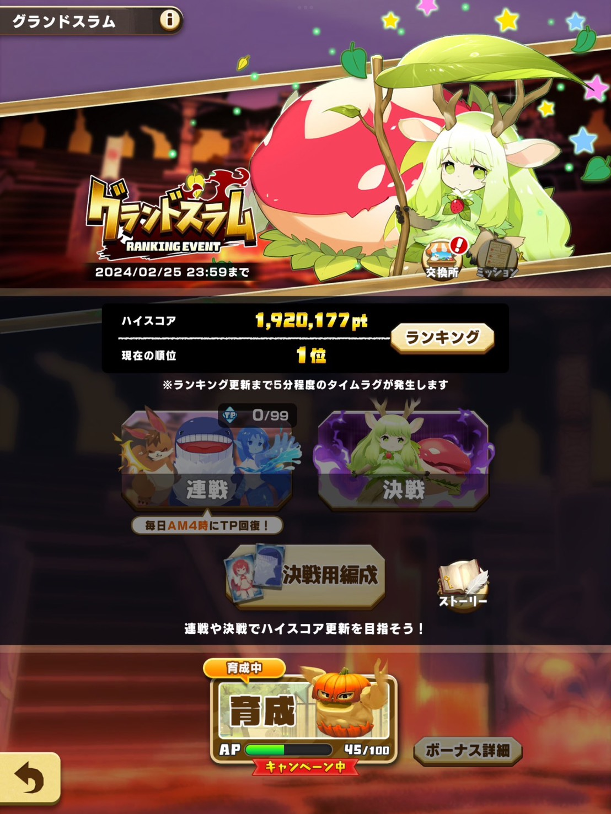
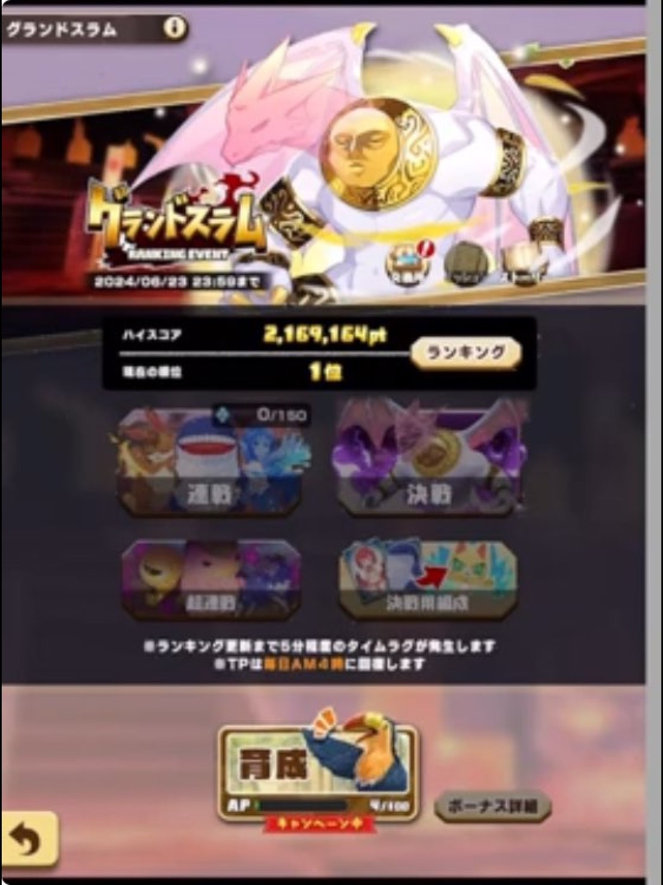
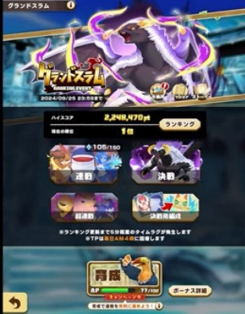
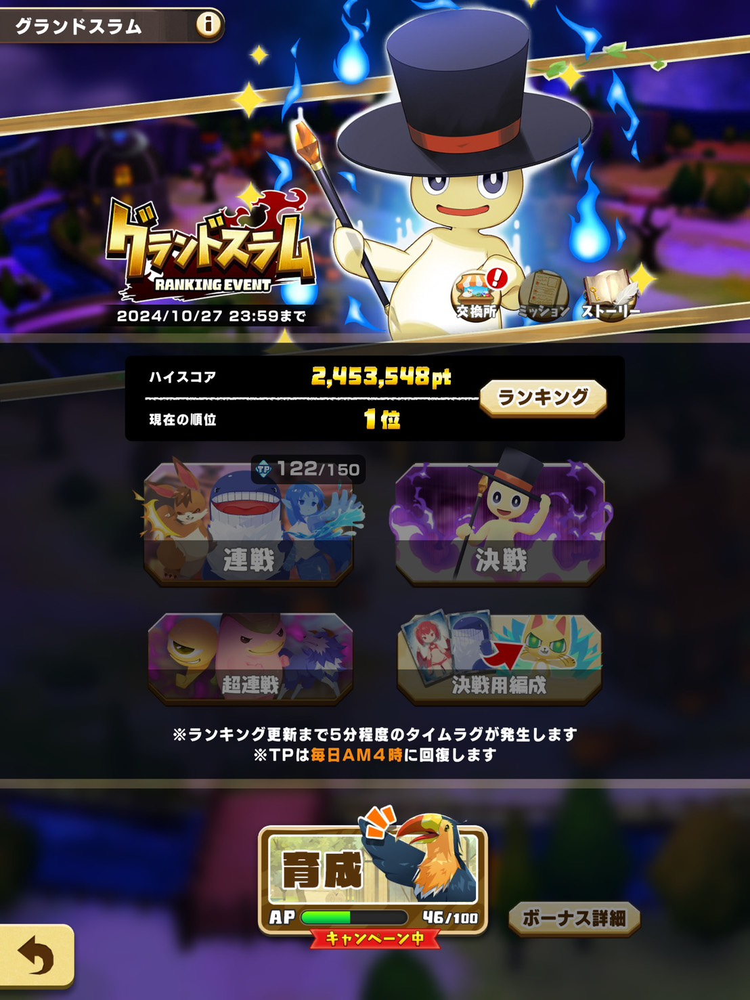
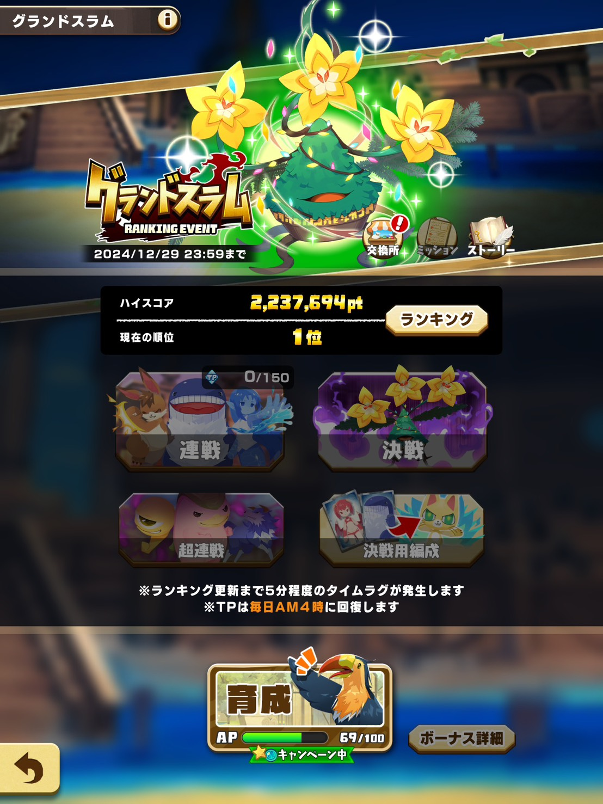
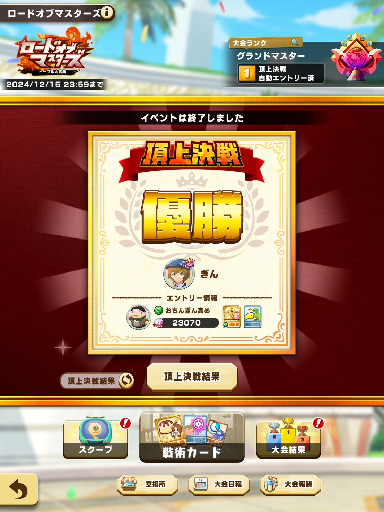
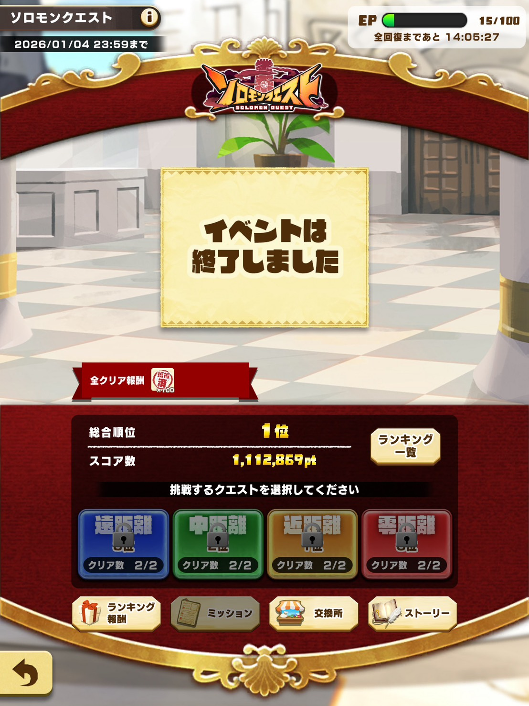

LINE
モンスターファーム
徹底攻略
トップ
モンスター一覧
アシストカード一覧
← トップに戻る
👤 管理人プロフィール
👑
ぎん
LINEモンスターファーム 現役トップランカー。
グランドスラム・ロードオブマスターズ・ソロモンクエストなど
全コンテンツで最上位を争い続けるプレイヤー。
実戦経験をもとにした独自の攻略情報を発信中。
5
グランドスラム
優勝
1
ローマス
頂上決戦優勝
1
ソロモンクエスト
1位
🏅 グランドスラム 優勝実績（5回）

🥇 1位
2024年2月 1,920,177pt

🥇 1位
2024年6月 2,169,164pt

🥇 1位
2024年9月 2,249,470pt

🥇 1位
2024年10月 2,453,548pt

🥇 1位
2024年12月 2,237,694pt
👑 ロードオブマスターズ 頂上決戦 優勝

🥇 優勝
2024年12月 頂上決戦
🗺️ ソロモンクエスト 総合1位

🥇 1位
第2回 1,112,869pt
📖 このサイトについて
本サイト「LINEモンスターファーム徹底攻略」は、管理人ぎんが実戦経験をもとに運営する非公式ファンサイトです。
モンスター一覧・アシストカード評価・育成方法・各コンテンツの攻略情報など、他では得られないレベルの情報を目指して発信しています。
掲載しているゲーム画像・スクリーンショットは、LINEモンスターファームの二次創作・ファンサイトに関するガイドラインに基づき、攻略情報の「引用」として使用しています。